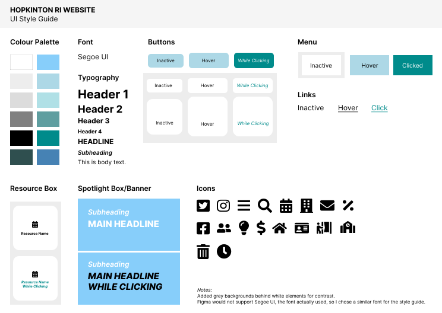

Hi-Fi Wireframes
Fifth, I created high-fidelity wireframes for a laptop, tablet, and phone.
Laptop

Tablet

Phone

Objective: To conduct a responsive redesign of an existing website with usability issues. This includes analyzing the current interface, creating low-fidelity and high-fidelity prototypes for multiple screen sizes, and building the new responsive website.
I chose this website's homepage because, despite its largely informational and navigational purpose, the information in it is completely unorganized, with no clear layout, hierarchy, or flow.
First, I identified major usability issues, most of which decrease efficiency, learnability, AND memorability:
Second, I used WebAIM WAVE to detect a number of accessibility issues. Major ones include:
The accessibility issues detected follow a major theme of the usability issues - difficulty navigating, both in the page and to other pages. It seems that the lack of structure and consistency is an issue not just visually but also for screen readers, making the page quite inaccessible in multiple ways.
Third, I created low-fidelity wireframes for a laptop, tablet, and phone.
Fourth, I created a style guide.
Fifth, I created high-fidelity wireframes for a laptop, tablet, and phone.
This project taught me a lot, but I won't make you read all of what I learned. These are my main takeaways: